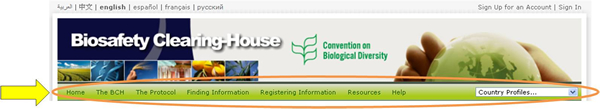

Arriba del área de bienvenida de la página de inicio, hay una barra de navegación con los enlaces de los principales componentes del CIISB.

Figura 7
La sección El CIISB proporciona enlaces directos a información acerca del CIISB, su desarrollo y manejo, gestión, temas destacados y políticas.
La sección El Protocolo proporciona enlaces al texto del Protocolo, a una lista de países Parte del Protocolo, las Decisiones de la CP-RP información acerca de informes oficiales, reuniones, documentos y notificaciones.
La sección Búsqueda de información proporciona enlaces a interfases de búsqueda para las distintas categorías de información en las bases de datos del CIISB, así como información compilada (ej. Contactos Nacionales, Registro de OVM, Registro de organismos Parentales y Registro de Genes).
La sección Registrar de información conecta al usuario con la página de ingreso al Centro de Gestión, a través de la misma los usuarios del CIISB pueden crear y gestionar su información.
La sección Recursos proporciona acceso a otros recursos del sitio tales como (i) formatos comunes usados en el CIISB, (ii) el Glosario, (iii) el Tesauro, (iv) una página que describe las soluciones para la Participación nacional (Hermes y el Plug-in Ajax), (v) la lista de distribución de correo,(vi) la lista de archivos para descargar, (vii) Mapa del sitio.
La sección Ayuda proporciona acceso a (i) Preguntas más frecuentes (PF), (ii) Módulos de entrenamiento del CIISB, (iii) guía del CIISB, (iv) el sitio de entrenamiento del CIISB y (v) los servicios de interoperabilidad.
En la parte derecha de la barra de navegación se encuentra un cuadro de búsqueda para localizar los perfiles de Países. El mismo permite realizar una búsqueda rápida para de consultar todos los registros suministrados por cada país.
Los menús del Portal Central del CIISB usan íconos para ilustrar aspectos de los enlaces asociados. Los íconos de menú que más comúnmente se encuentran son:
 El enlace lleva al usuario a otras páginas web
El enlace lleva al usuario a otras páginas web
 Enlace a un documento PDF
Enlace a un documento PDF
 El enlace lleva al usuario a una herramienta de búsqueda en otro sitio web.
El enlace lleva al usuario a una herramienta de búsqueda en otro sitio web.
En la Guía de Referencia Rápida 4, disponible en el Sitio de Entrenamiento del CIISB, se proporcionan mayor detalles sobre los íconos más utilizados en el Portal Central del CIISB (https://bchtraining.cbd.int/member/training-signin.aspx?returnurl=%2fdefault.shtml).